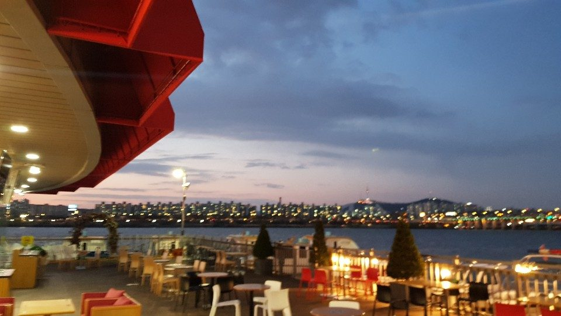
ABOUT
River, light, and a slow cup
마리나파크 카페는 반포한강공원 서래나루, 한강 위에 떠 있는 듯한 마리나파크 1층에 있습니다. 통창 너머로 한강과 서울의 스카이라인이 이어지고, 레드 어닝 아래 야외 테라스에서는 노을과 야경을 가장 가까이에서 만날 수 있습니다.
커피와 티, 디저트부터 피자·파스타·스테이크 같은 식사 메뉴, 저녁의 와인과 맥주, 하이볼까지 — 한강 산책 후 가볍게 들르는 시간도, 특별한 날의 긴 식사도 어울리는 공간입니다.
- 영업시간매일 10:00 – 22:00
- 브런치오후 16:00까지
- 위치서울 서초구 반포동 115-1 서래나루 · 마리나파크 1층
- 문의02-537-2440
Marina Park Cafe is a riverside cafe & restaurant on the ground floor of Marina Park at Seoraenaru, Banpo Han River Park, Seoul. Floor-to-ceiling river views, a red-awning terrace, coffee and desserts, Italian plates, brunch until 16:00, wine, beer and highballs. Open daily 10:00–22:00.
THE TERRACE
Sunset on the Han from your table

SIGNATURE DISHES
Italian plates & comfort food
피자 · 파스타 · 돈까스 · 함박스테이크 · 찹스테이크 · 볶음밥 · 샐러드 · 떡볶이 · 먹태
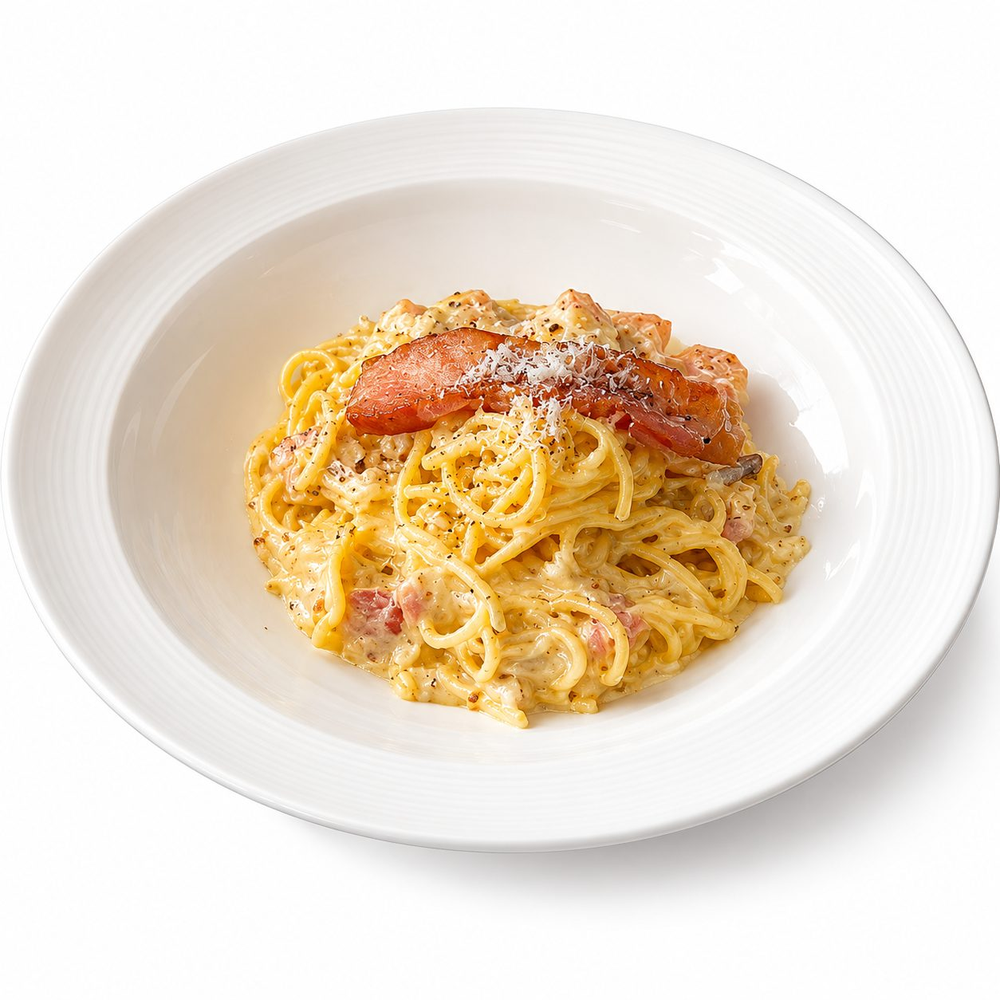
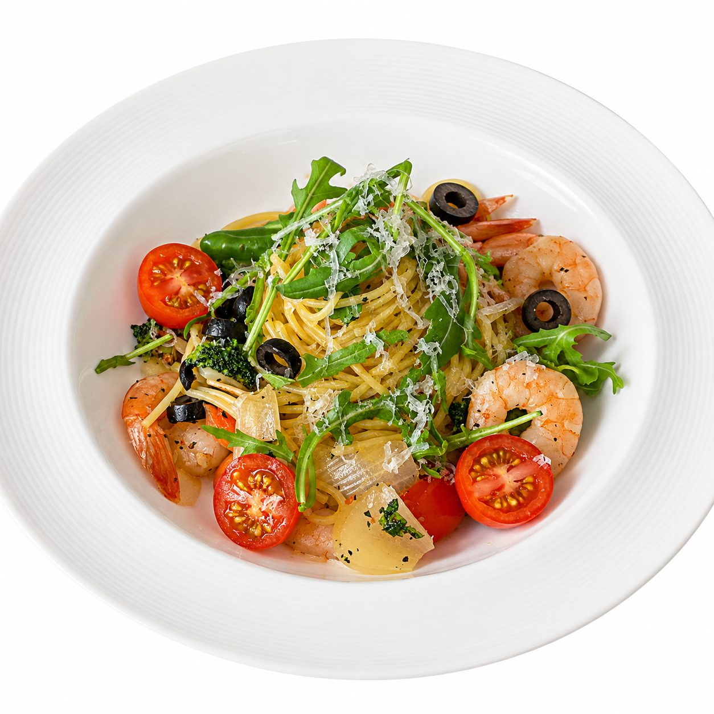
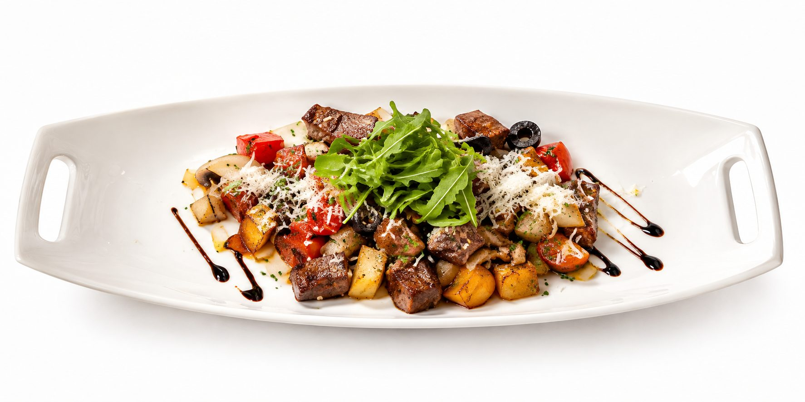
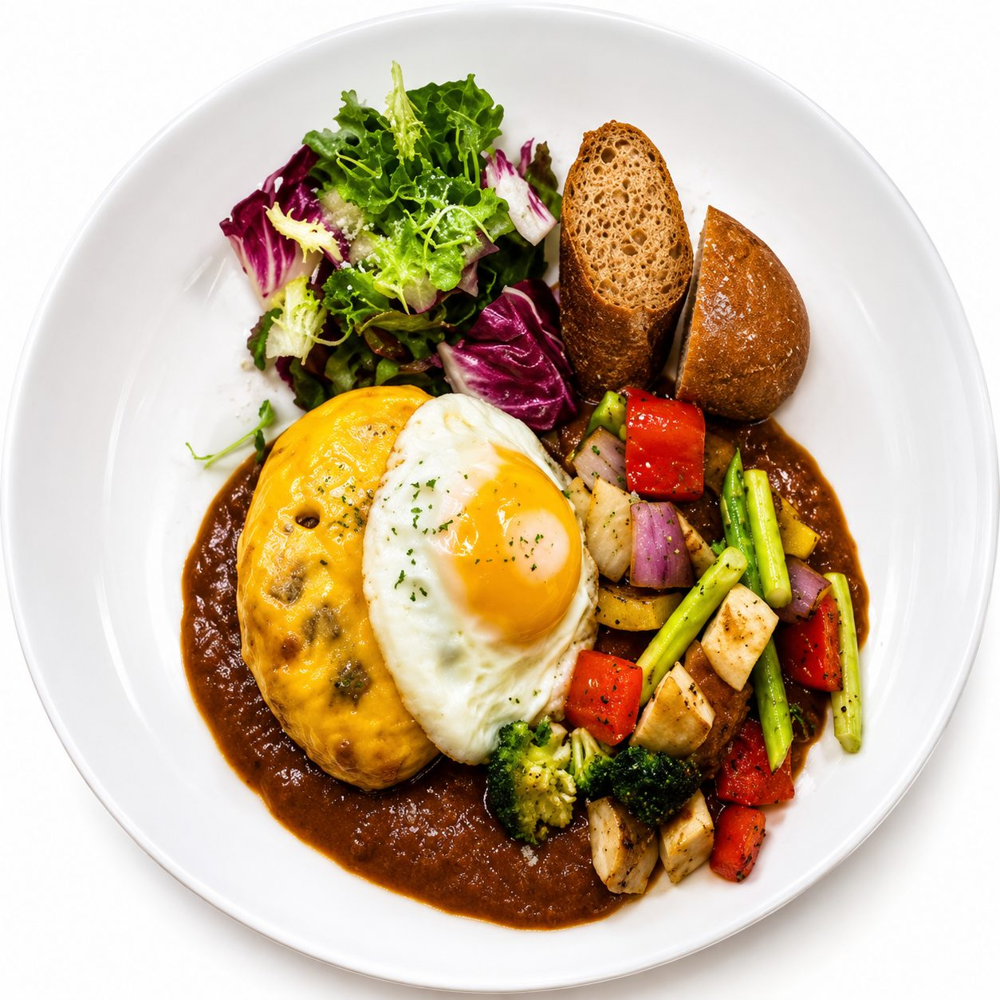
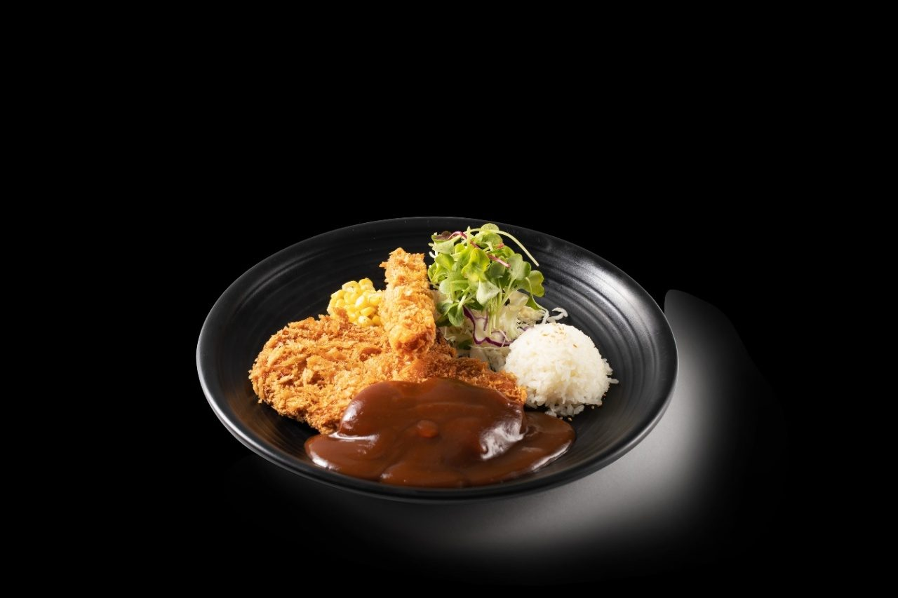
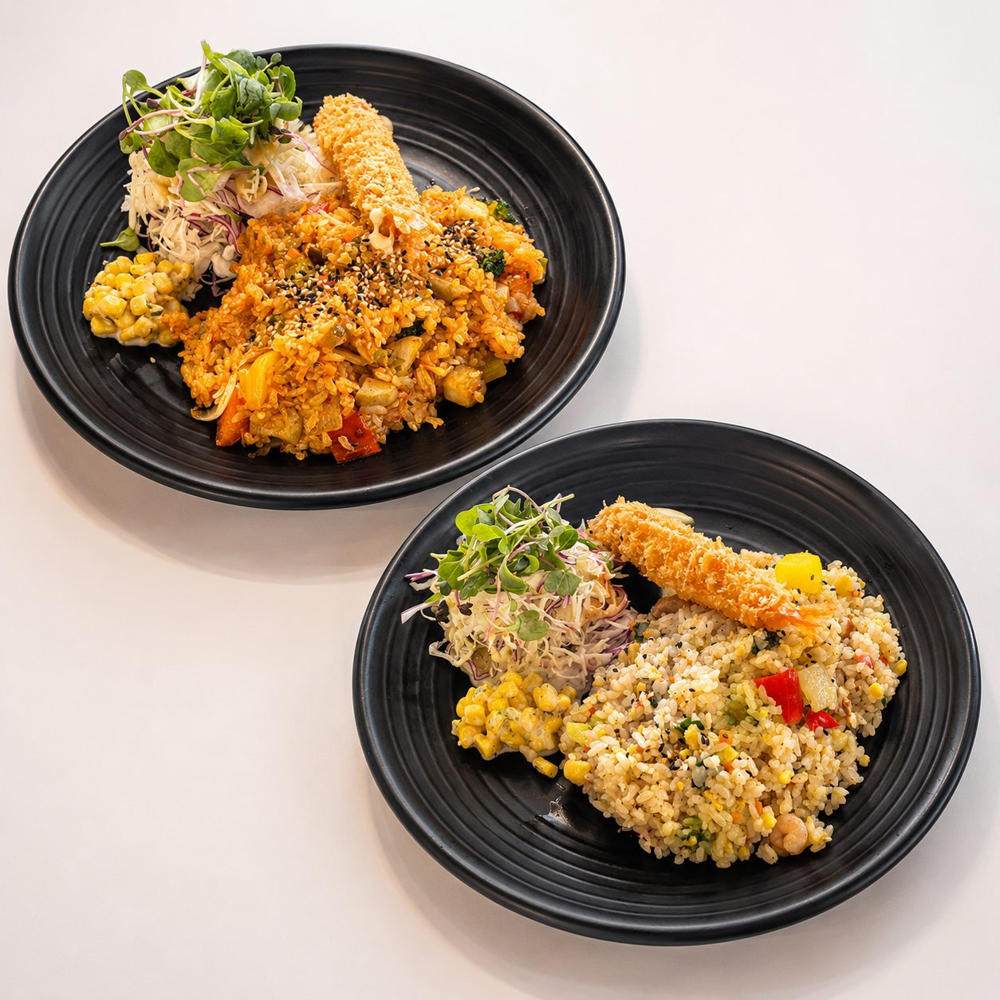
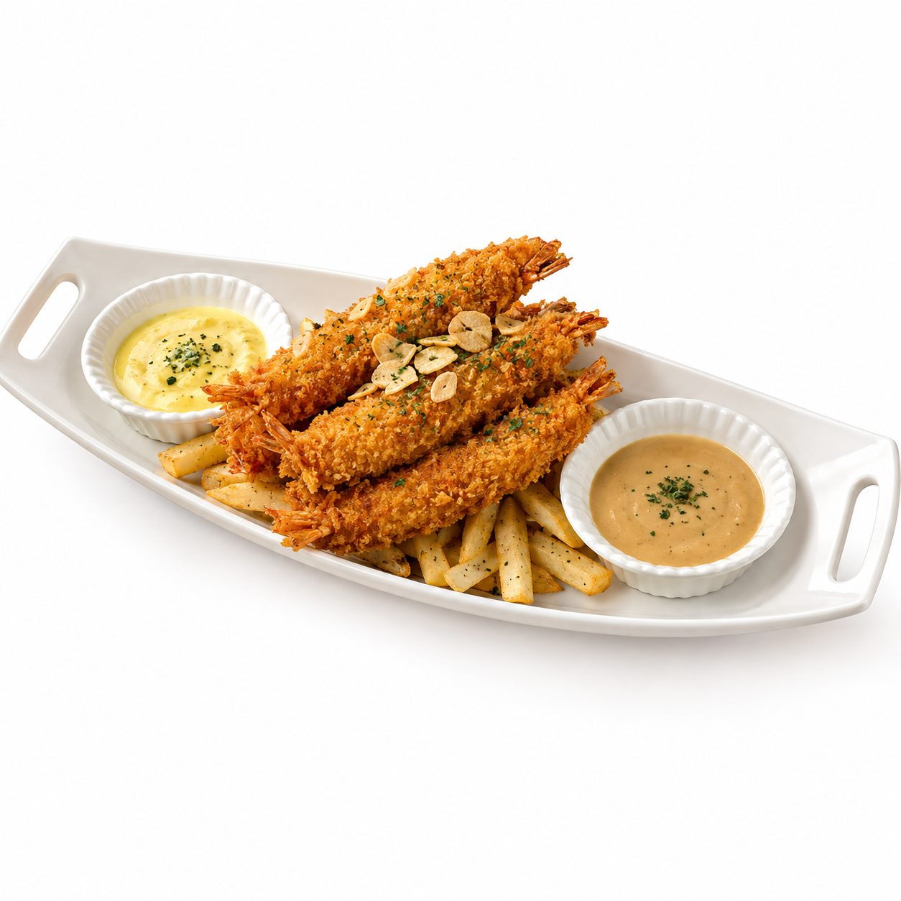
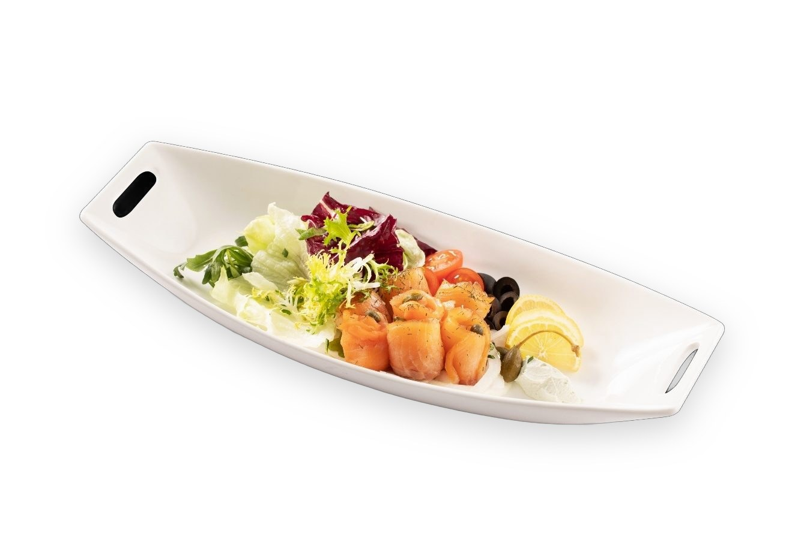
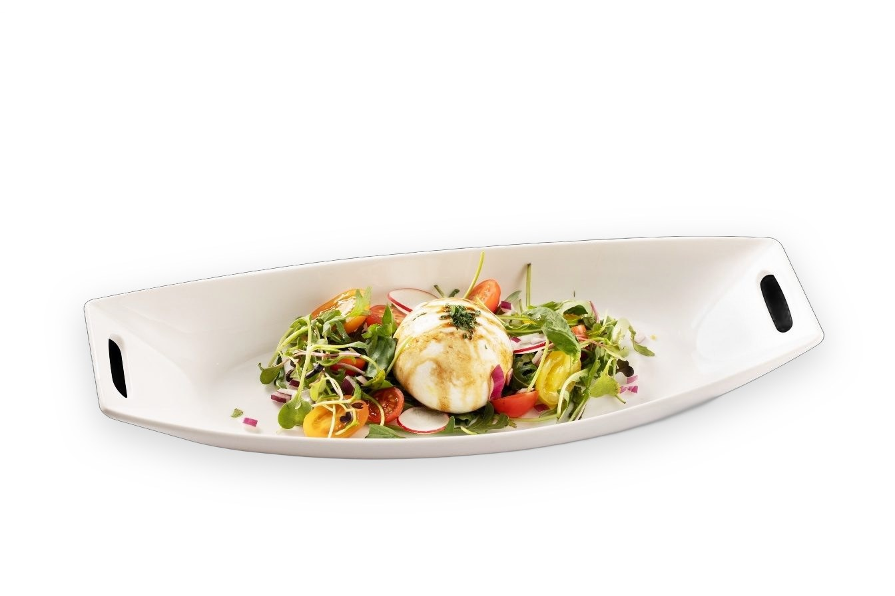
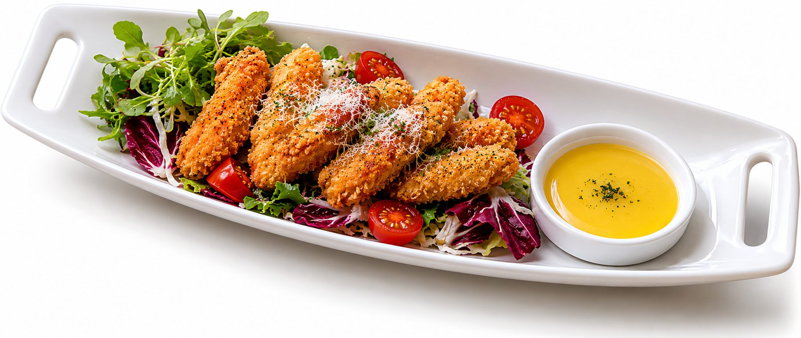
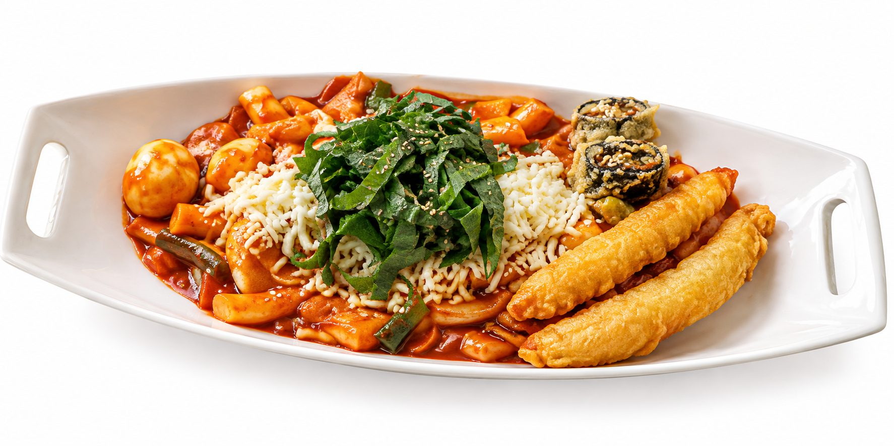
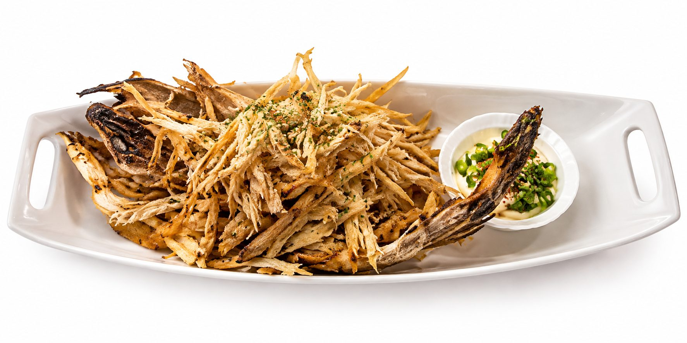

PRIVATE PARTY
Small gatherings by the river
카페 가든과 테라스에서 10~30명 규모의 생일 모임, 동호회, 브라이덜 샤워, 소규모 송년 모임을 예약하실 수 있습니다. 케이크 반입과 간단한 데코가 가능하고, 한강 노을이 자연스러운 배경이 됩니다.
50명 이상의 연회, 기업행사, 예식은 같은 건물 2층 컨벤션홀(100~300명)과 3층 루프탑 가든에서 진행합니다 — 마리나파크 연회·웨딩 안내.
MARINA PARK
A house on the river, three floors of occasions


1F 마리나파크 카페 · 2F 컨벤션홀 (100~300명) · 3F 루프탑 가든
VISIT
Find us at Seoraenaru
- 주소서울특별시 서초구 반포동 115-1 (서래나루 · 반포한강공원) 마리나파크 1층
- 영업시간매일 10:00 – 22:00
- 전화02-537-2440
- 주차반포한강공원 주차장 이용
- 대중교통고속터미널역 · 신반포역에서 반포한강공원 서래나루 방향
- Instagram@marinapark.cafe

FAQ
자주 묻는 질문
마리나파크 카페 영업시간은 어떻게 되나요?
매일 10:00 – 22:00 영업합니다. 브런치 세트는 오후 16:00까지 주문 가능합니다. 행사 대관이 있는 날은 일부 공간 이용이 제한될 수 있습니다.
카페는 어디에 있나요? 주차는요?
서울 서초구 반포동 115-1 서래나루(반포한강공원) 마리나파크 1층입니다. 반포한강공원 주차장을 이용하시면 되고, 한강 산책 후 들르기 좋은 위치입니다.
한강이 보이는 자리가 있나요?
1층 전체가 한강을 바라보는 통창 구조이며, 레드 어닝이 있는 야외 테라스에서는 한강과 서울 도심 스카이라인을 바로 앞에서 즐기실 수 있습니다.
생일 모임이나 소규모 파티도 가능한가요?
카페 가든·테라스에서 10~30명 규모의 생일 모임, 동호회, 브라이덜 샤워, 소규모 송년 모임을 예약하실 수 있습니다. 케이크 반입과 간단한 데코가 가능하며, 더 큰 행사는 마리나파크 2층 컨벤션홀과 3층 루프탑 가든을 이용합니다.
식사 메뉴도 있나요?
피자, 파스타, 돈까스, 함박스테이크, 찹스테이크, 볶음밥 등 식사 메뉴와 브런치 세트, 와인·맥주·하이볼을 함께 준비하고 있습니다.